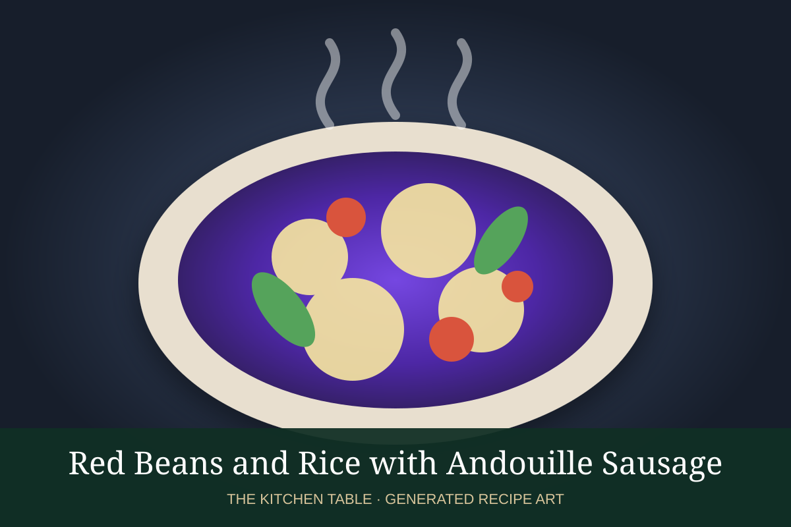

← Back to all recipes
RICE · CAJUN / CREOLE
Red Beans and Rice with Andouille Sausage
Creamy New Orleans red beans slowly simmered with andouille, the holy trinity, herbs, and spices, served over rice.
2 hr 30 minServes 8

Photo: Wikimedia Commons
Ingredients
- 1 lb dried red kidney beans, soaked overnight
- 12 oz andouille sausage, sliced
- 2 tbsp neutral oil
- 1 large onion, diced
- 1 green bell pepper, diced
- 3 celery ribs, diced
- 4 garlic cloves, minced
- 6 cups water or chicken stock
- 2 bay leaves
- 1 tsp dried thyme
- 1 tsp smoked paprika
- 1/2 tsp cayenne, optional
- Salt and black pepper
- Cooked white rice, scallions, and hot sauce, for serving
Preparation
- Drain the soaked beans. Brown the andouille in a heavy pot and remove.
- Cook onion, bell pepper, and celery in the sausage drippings until soft; add garlic.
- Add beans, stock or water, bay leaves, thyme, paprika, cayenne, and sausage.
- Simmer gently, partially covered, for 1 1/2 to 2 hours until the beans are very tender.
- Mash a cup of beans against the side of the pot and stir them back in to create a creamy texture. Simmer until thickened.
- Season to taste and serve over white rice with scallions and hot sauce.